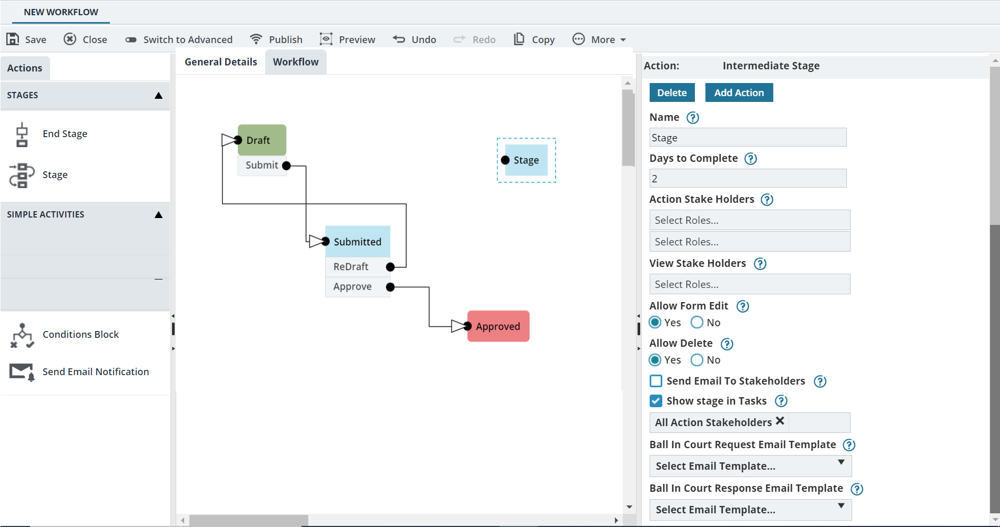
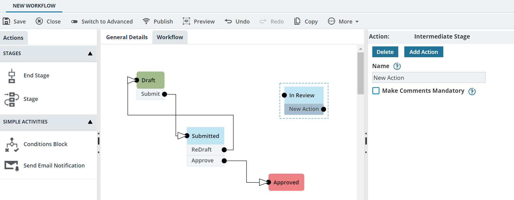
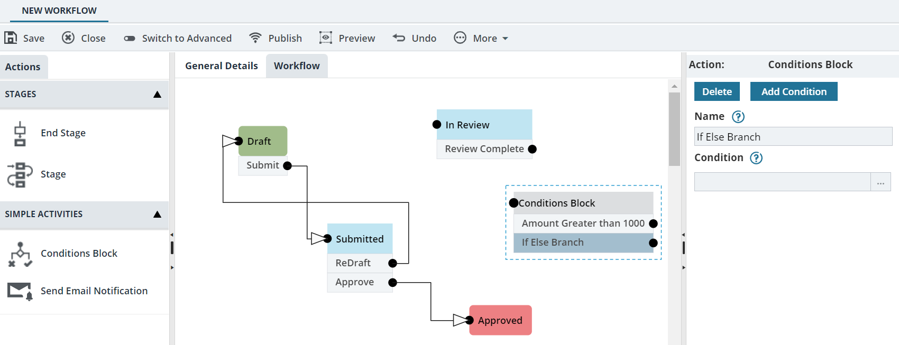

Creating a Workflow Using Simple Mode
- The role of the logged in user has permission to create or edit a workflow.
- Add a stage with two actions
- Add a condition to the workflow using the conditions block
- Configure the workflow to send a standard automated email notification to stakeholders when the associated form is transitioned from one workflow stage to the next workflow stage
- Define conditions on the users performing a workflow action
-
Create a basic workflow.
Alternatively, edit a workflow.
-
To add a stage to the workflow, perform the following steps:
-
In the Actions navigation pane, expand STAGES, and then drag the Stage action item to the Workflow tab.
The new stage item is displayed on the canvas.Alternatively, to copy a stage, perform the following steps:
- Click the intermediate stage to be copied.
- Click Copy.
The selected intermediate stage is copied.
- Click an action element, and in the properties pane, click Delete.
Similarly, delete all the other action elements.
-
In the Workflow tab, click the stage.
The stage properties are displayed in the right pane, as illustrated in the following image:
Figure 1. Workflow Stage Properties  -
In the Intermediate Stage properties pane, provide the required information in the fields, as described in the following table:
Field Name Description Name Enter the name of the stage. For example, enter In Review.
Days to Complete Enter the number of days before which an action must be performed in the current workflow stage.
If the stakeholder does not perform an action in the specified number of days, an escalation email is sent to users in the Administrator role.
By default, the number of days defined in the WORKFLOW SETTINGS page is displayed. For information on workflow settings, refer to Administration, Workflow Settings.
Action Stake Holders Select the roles with which a user can perform the workflow action for the stage. The Action Stake Holder box lists all the roles that are assigned with theEdit permission at the form level. For information on roles, refer to Security Roles. Also, if Allow Workflow Action by All Stakeholders is selected in the General Details tab, then all stakeholders with theEdit or View or both permissions at the form level are listed in the Action Stake Holders drop-down list.
Note:- For a role to be available in the list of action stakeholders, the Edit permission must be enabled for the role at the form level. To modify permissions, refer to Editing Role Information.
- Ensure that the stakeholders selected in the Action Stake Holders box are also selected in the View Stake Holders box.
View Stake Holders Select the roles with which a user can view the records that are in the workflow stage but not perform any workflow actions.
The View Stake Holders box lists all the roles that are assigned with View permission at the form level. For information on roles, refer to Security Roles.
Note:- You can view the View Stake Holders box only if the Configure View Permissions check box is selected in the General Details tab.
- If the role is not selected in the View Stake Holders box, then that role cannot view the record in the selected form list page.
Allow Form Edit Click Yes, to allow the user to edit the record in this stage. Click No, to restrict the users from editing the record in this stage.
Select Visibility Of Form Divisions Sets the visibility of the various sections defined in the form. Click any of the following:- Edit - Enables stakeholders to edit the information in the section in the current workflow stage.
- View - Enables stakeholders to view information in the section in the current workflow stage.
- Hide – Hides the information in the section in the current workflow stage. Stakeholders at this workflow stage cannot view information in the section.
Allow Delete Click either of the following options: - Click Yes, to allow the users to delete the record in this stage.
- Click No, to restrict the users from deleting the record in this stage.
Send Email To Stakeholders Select the check box, to send a standard automated email notification to the action stakeholders of the subsequent stage whenever the workflow action is performed. The email template is based on the default template selected in the WORKFLOW SETTINGS page. For information on workflow settings, refer to Administration, Workflow Settings.
Show stage in Tasks Ensure the check box is selected, to list the subsequent workflow action in the My Tasks list of all stakeholders of the subsequent workflow stage.
Ball In Court Request Email Template Select the required email template to be used to send an automated notification to the user selected to receive form information using the Ball in Court feature. Available templates are based on the form that is selected for the workflow.
Available options are templates defined for the form in the Mail Body Templates catalog of the Library. For information on the Ball in Court feature, refer to Common Application Features, Ball in Court.
Ball In Court Response Email Template Select the required email template to be used to send an automated response notification to the user who initiated the Ball in Court notification. Available templates are based on the form that is selected for the workflow.
Available options are templates defined for the form in the Mail Body Templates catalog of the Library. For information on the Ball in Court feature, refer to Common Application Features, Ball in Court.
-
In the Actions navigation pane, expand STAGES, and then drag the Stage action item to the Workflow tab.
-
To add an action to the workflow stage, perform the following steps:
-
In the right pane, click Add Action.
Alternatively, right-click the new stage item in the canvas, and then click New Action.The New Action box is displayed below the In Review stage as illustrated in the following image:
Figure 2. Workflow New Action  -
In the Workflow tab, click the New Action item.
The properties of the action item are displayed in the right pane.
- In the Name box, enter the name of the new action. For example, enter Review Complete.
-
Select Make Comments Mandatory check box to ensure comments are provided mandatorily in the Notes box before performing the next workflow action.
Note:To delete an action, right-click the action item, and click Delete Action.
-
In the right pane, click Add Action.
-
You can add a condition to the workflow using the conditions block. To add a Simple Conditions Block action item to the workflow, perform the following steps:
-
From the Actions pane, expand SIMPLE ACTIVITIES, and then drag the Conditions Block action item to the Workflow tab.
The Conditions Block item is displayed on the canvas.
- In the Workflow tab, click the Conditions Block item.
-
In the right pane, click Add Condition.
Alternatively, right-click the Conditions Block item in the canvas, and then click New If Else Branch.The If Else Branch is displayed below the conditions block item.
-
In the Workflow tab, click the If Else Branch item.
The If Else Branch properties are displayed in the right pane, as illustrated in the following image:
Figure 3. Workflow Conditions Block 
-
In the Name box, enter the name for the condition.
For example, enter Amount Greater than 1000.
-
In the Conditions field, click
 .
The RESOURCES dialog box is displayed.In the RESOURCES dialog box, two sections are displayed as illustrated in the following image:Using the first section, you can create workflow conditions with the fields of the form selected in the General Details tab. Using the second section, you can create workflow conditions with the fields of the Project Details and Contract Details forms.
.
The RESOURCES dialog box is displayed.In the RESOURCES dialog box, two sections are displayed as illustrated in the following image:Using the first section, you can create workflow conditions with the fields of the form selected in the General Details tab. Using the second section, you can create workflow conditions with the fields of the Project Details and Contract Details forms.Figure 4. Form Attributes 
-
From the Actions pane, expand SIMPLE ACTIVITIES, and then drag the Conditions Block action item to the Workflow tab.
-
To create a rule or group of rules and define conditions for the workflow, in the RESOURCES dialog box, perform the following steps:
-
Click Add rule.
A new row with a drop-down list is added.Note:The AND and OR buttons present at the top are unavailable.Alternatively, to create a group of rules with a combination of multiple AND and OR conditions, click Add Group.
A new row with a drop-down list is added.
Note:The AND and OR present at the top are enabled. -
From the drop-down list, select the required form field.
For example, select Amount in $.Available fields are associated with the form selected in the General Details tab.When a form field is selected, two new fields are added to the row. The second field is a drop-down list and based on the form field selected, the third field can be any of the following.
- Drop-down list
- Option list
- Text box
- Numeric text box
- Calendar drop-down box
-
From the second drop-down list, select the operator.
For example, select greater than >.The operator creates the condition between the form field you select in the first drop-down list and the value that you enter or select in the third field.From the second drop-down list, if you select either between or not between, the third and the fourth fields appear, which can be one of the following:
- Numeric text box
- Calendar drop-down box
- Based on the form field you select in the first field, enter or select a value in the third field. For example, enter 1000.
-
Optionally, to add multiple rules to the workflow or group, repeat the above steps 1 to 4.
When you add more than one rule, then the AND and OR buttons present at the top are enabled. Based on the workflow condition, click either of the following:
- If all the rules must be true to execute the workflow condition, click AND.
For example, Amount in $ > 1000 AND Remaining Amount in $ < 500.
The subsequent workflow stage is In Review if the amount entered in the field Amount in $ is greater than 1000 and the amount entered in the field Remaining Amount in $ is less than 500.
- If any one of the rules must be true to execute the workflow condition, click OR.
For example, Amount in $ > 1000 OR Remaining Amount in $ < 500.
The subsequent workflow stage is In Review if the amount entered in the field Amount in $ is greater than 1000 or the amount entered in the field Remaining Amount in $ is less than 500.
- If all the rules must be true to execute the workflow condition, click AND.
- Optionally, in the second row, create workflow conditions using the fields of the Project and Contract Details forms.
- Optionally, to delete a row, click Delete corresponding to the appropriate row.
- Click Save.
-
Click Add rule.
-
To add another condition, perform the following steps:
- In the Workflow tab, click the Conditions Block item.
-
In the right pane, click Add Condition. Alternatively, right-click the Conditions Block item in the canvas, and then click New If Else Branch.
The If Else Branch is displayed below the Amount Greater than 1000 item as illustrated in the following image:
Figure 5. Workflow If Else Branch  -
In the Workflow tab, click the If Else Branch item.
The If Else Branch properties are displayed in the right pane.
-
In the Name box, enter the name for the condition.
For example, enter Else.
-
You can send a standard automated email notification to stakeholders when the associated form is transitioned from one workflow stage to the next workflow stage. To customize workflow email notifications, perform the following steps:
-
In the Actions navigation pane, expand SIMPLE ACTIVITIES, and then drag the Send Email Notification action item to the Workflow tab.
The Send Email Notification item is displayed on the canvas.
-
In the Workflow tab, click the Send Email Notification item.
The Send Email Notification properties are displayed in the right pane, as illustrated in the following image:
Figure 6. Workflow Email Notification 
-
In the Send Email Notification properties pane, provide the required information in the fields, as described in the following table:
Field Name Description Name Enter the name of the stage. the default stage name is displayed as Send Email Notification. If required, enter a new name for the action item. To Select the required role the email notification will be sent to. Available options in the list are roles that are defined in the application with necessary permissions.
Optionally, you can type the required email address (For example, john@Mind.com).
CC Select the required roles a copy of the email notification will be sent to. Available options in the list are roles that are defined in the application with necessary permissions.
Optionally, you can type the required email address. For example, john@Mind.com.
Select Mail Body Template Select the required mail body template that must be sent to the stakeholders. Available templates are based on the form that is selected for the workflow.
Available options are templates defined for the form in the Mail Body Templates catalog of the library.
Attachments - Form Attachment(s) – Select the check box to send the notification with the files that are attached to the record for which the workflow action is performed.
- Workflow Comment Attachment(s) – Select the check box to send the notification with the files that are attached to the workflow comments.
- Mail Merge – Select the required mail merge template. Available options are mail merge templates configured for the selected form. For information on Mail Merge, refer to Common Application Features, Mail Merge.
Notify through Email Click the required option: - Click Any user completes action to specify that if any of the action stakeholders transition the record to the next workflow stage, the email notification is sent to the selected stakeholders.
- Click All user(s) complete action to specify that all the action stakeholders must transition the record to the next workflow stage to send the email notification to the selected stakeholders.
-
In the Actions navigation pane, expand SIMPLE ACTIVITIES, and then drag the Send Email Notification action item to the Workflow tab.
-
To connect workflow items to complete the business process, click the port at the item, and drag the port to the port of the required item as illustrated in the following image:
Figure 7. Edit Workflow  Note:By default, the port is located on the right of the box. To change the location of the port, right-click the new action item and select Reverse Port.
Note:By default, the port is located on the right of the box. To change the location of the port, right-click the new action item and select Reverse Port. -
To define conditions on the users performing a workflow action, perform the following steps:
-
Click the required port.
The Workflow Connection properties are displayed on the right pane.
-
In the Perform Operation After section, click the required option:
- Any user completes action: To specify that if any of the action stakeholders transition the record to the next workflow stage, the record moves to the next workflow stage.
- All user(s) complete action: To specify that all the action stakeholders must transition the record to the next workflow stage for the record to move to the next workflow stage.
-
Click the required port.
-
Click Save.
The workflow is saved and listed on the WORKFLOW LIST page.